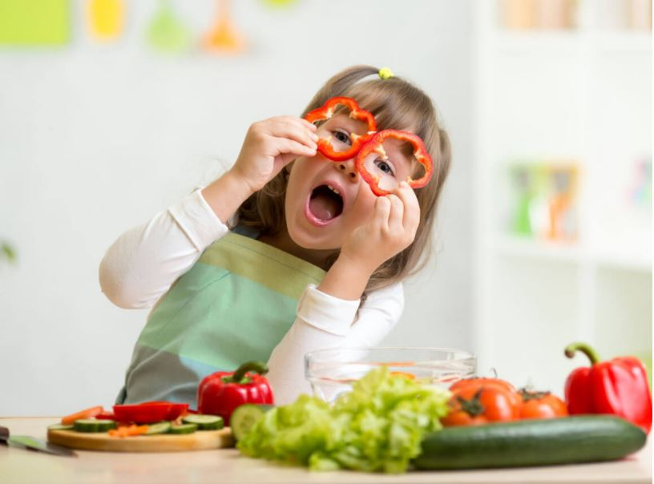

Alimentação saudável para crianças
As crianças precisam de alimentação equilibrada provenientes de todos os grupos:
- Produtos integrais;
- Alimentos Proteicos;
- Frutas
- Legumes (frescos e não processados)
Nutrientes e pirâmide alimentar
Para termos uma melhor compreensão de como uma alimentação saudável é importante na vida das crianças, iremos separar os
principais nutrientes necessários em forma de pirâmide (sendo a base os mais importantes e o topo os menos importantes).
Cada parte dessa pirâmide podemos explanar como funciona seguido dessas informações:
- Proteínas: prefira as carnes magras, aves, ovos, feijões, produtos de soja e nozes
- Legumes e Verduras: procure oferecer sempre legumes e verduras frescos e coloridos
- Grãos: opte sempre pelos grãos integrais como pão integral, aveia, pipoca, quinoa ou arroz integral
- Frutas: prefira sempre as frescas e inteiras (ou minimamente processados). No caso de sucos, prefira os sem
açúcar.
- Laticínios: prefira os sem gordura ou com pouca gordura, como leite, iogurte, queijo ou bebidas de soja
fortificadas.
Para um melhor desenvolvimento deve ter uma restrição a quantidade de alimentos que contenham:
- - Gordura saturada
- - Sal
- - Açucares refinados
- - Mel
- - Melaço
- - Xaropes
- - Açúcar mascavo.
O consumo de açucares pode dificultar que a criança crie hábitos de consumir legumes e frutas.
Para criar um habito que se torne vitalício para as crianças é sempre que possível oferecer alimentos que são saudáveis
e nutritivos.
8 dicas de alimentação saudável para crianças.
- Refeições em família: As refeições em família geram oportunidades para que os pais apresentem alimentos novos, moldando uma boa alimentação. Com esses hábitos tem chances de as crianças serem mais propensas a comer frutas, legumes e grãos.
- Geladeira e despensa com alimentos saudáveis: Manter frutas, legumes e bebidas saudáveis (água, leite, suco de frutas naturais) em fácil acesso para que evitem comidas não saudáveis como refrigerantes, batatas fritas e bolachas.
- Cozinhe mais refeições em casa: Procurar fazer mais refeições em casa é a melhor opção para alimentação saudável de uma criança, pois quando consumimos fora grande parte dos alimentos tem adições maiores açúcar, sal e gordura. Envolver os menores no processo de planejamento é uma ferramenta para que ele se habitue em escolher os mais saudáveis no processo do preparo.
- Água é a opção número um: Muitas crianças não têm costume de beber água até mesmo pode ter aversão, então é necessário incentivar e limitar bebidas açucaradas como refrigerantes e bebidas com sabor de fruta.
- Evitar pular refeições: Quando se pula refeição, a criança poderá sentir fome entre elas. Fazendo ela procurar alimentos que nem sempre serão saudáveis (altamente calóricos e sem nutrientes). Caso ela não queira fazer a refeição, não tente substituir ou negociar por outro alimento que queira, ela irá se alimentar melhor na próxima refeição.
- Saboreie a comida: É necessário paciência, pois comer pausadamente e mastigar corretamente os alimentos é muito importante, a informação de saciedade demora cerca de 20 minutos no cérebro.
- Faça do prato uma aquarela: escolher alimentos saudáveis, com cores diferentes e que produza com eles pratos deliciosos, divertidos e coloridos incentivará que a criança tenha prazer em experimentar novos alimentos e se mantenha nutrida.
- Teste sempre novas receitas: Procure variar os pratos com novas receitas, utilizando novos ingredientes e dando sabor diferente à comida.
Exemplos de pratos


 Carregando...
Carregando...